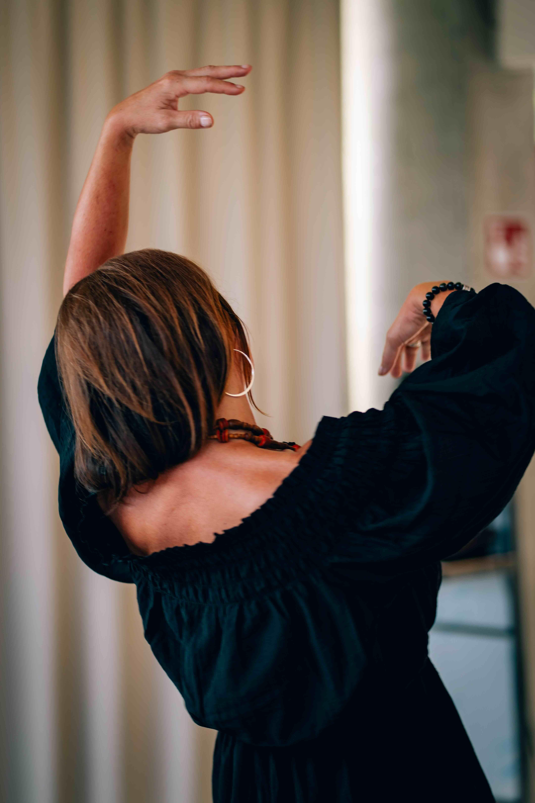
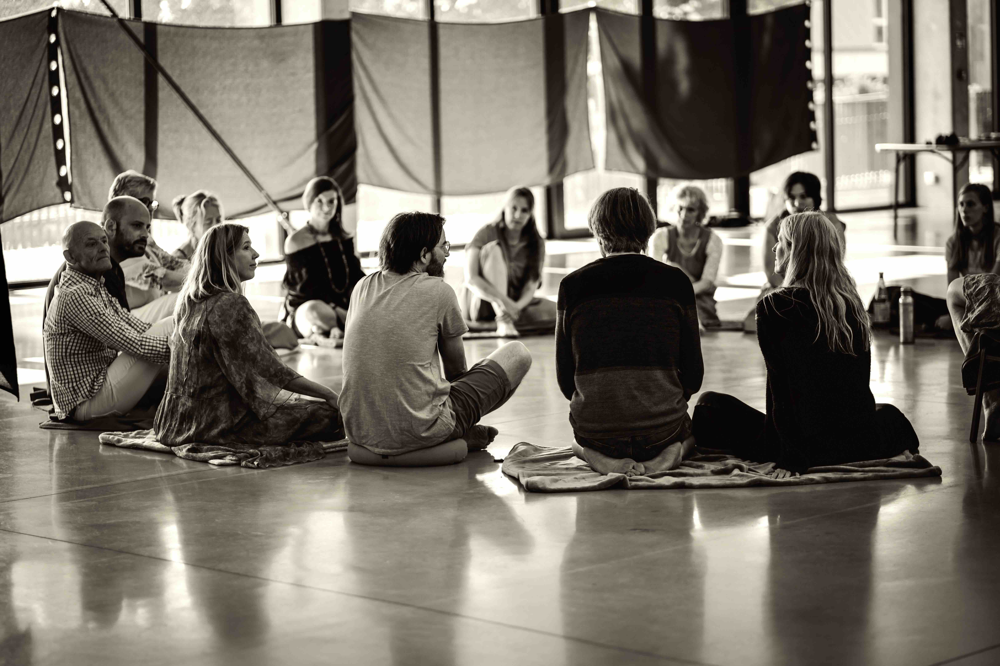
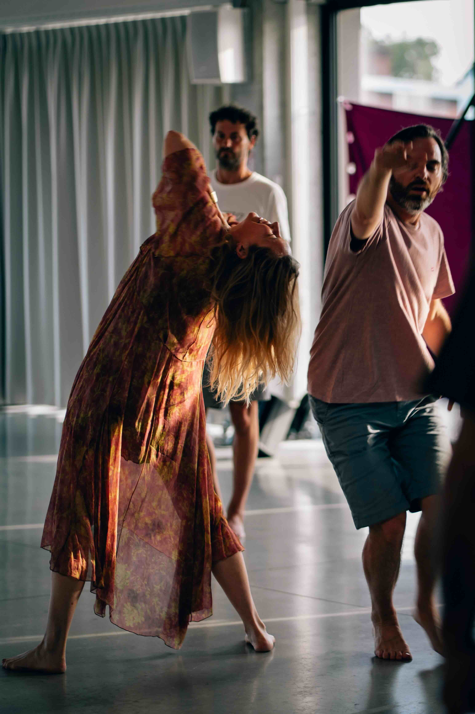
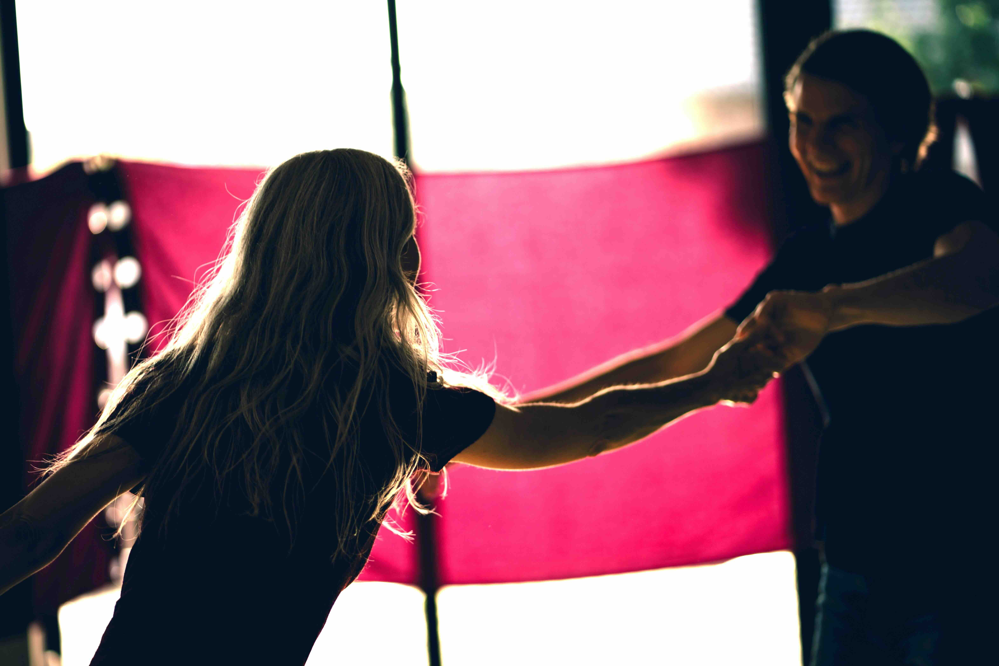
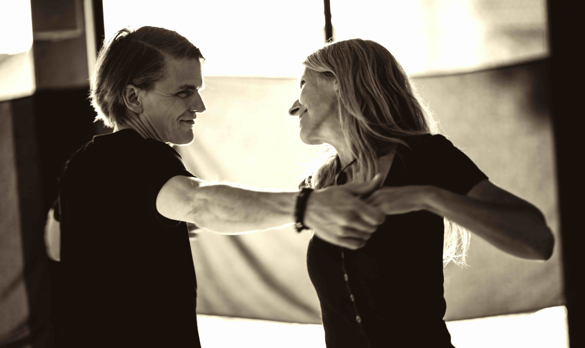
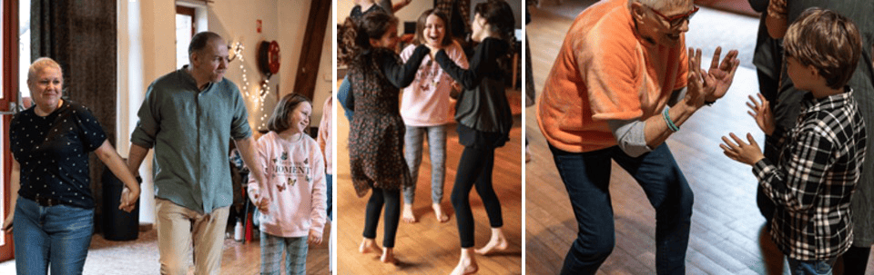

In de wekelijkse Biodanza groep dansen en verbinden we met onszelf, de anderen en het groter geheel. Zonder aangeleerde pasjes geven we expressie aan wat in ons leeft. We doen dat in een veilige groep waar we open staan voor elkaar zonder oordeel. Voel je het verlangen om te dansen en te bewegen vanuit jouw krachtige, speelse, gevoelige, nood-aan-verbindende zijn? Warm welkom! Enkele getuigenissen vind je hier.

Overzicht
- Biodanza Weekgroep met Fien & Lieven: woensdag van 19u30u tot ± 21u15 - Centrum Xaverianen
- Biodanza voor Koppels met Fien & Lieven : Vrijdag van 19u30u tot ± 21u30 - Veldstraat 39, Sint-Michiels (*, **)
- Wekelijkse Daggroep met Virginie: dinsdag van 13u30 tot ± 15u30 - Co-housing Eikenberg
- Biodanza voor Volwassenen & Kinderen met Virginie: Zondag van 9u45u tot ± 11u45 - 7 Torentjes (*)
- Biodanza Zomerweek - Identiteit & 4 elementen met Fien & Lieven: 19 juli - 24 juli, Morvan - Frankrijk
Wat heb je nodig?
Biodanza weekgroep op woensdag met Fien & Lieven
   Benieuwd om Biodanza te ervaren? Je hebt helemaal geen bewegingservaring nodig of een lichaam die (nog) alles kan. Enkel een hart dat het verlangen heeft om zich te openen. De bewegingen, dans en houdingen komen van binnenuit.
- Wanneer: Woensdag van 19u30 tot ± 21u15
- Waar: Centrum Xaverianen, Polyvalente zaal A, Xaverianenstraat 3, 8200 Sint-Michiels
- Najaar 2025: 10/09, 17/09, 24/09, 1/10, 8/10, 15/10, 22/10, 05/11, 12/11, 19/11, 26/11, 3/12, 10/12, 17/12 (potluck om 18u30)
- Voorjaar 2026: 7/01, 14/01, 21/01, 28/01, 4/02, 11/02, 25/02, 4/03, 11/03, 18/03, 25/03, 01/04 (potluck om 18u30), 22/04, 29/04, 6/05, 13/05, 20/05, 27/05, 3/06, 10/06, 17/06, 24/06 (potluck om 18u30)
- €15/les met 3 of 10 beurtenkaart
Biodanza voor Koppels met Fien & Lieven
Je verdiepen in de verbinding met je partner via Biodanza? Dat kan vanaf vrijdag 26 september 2025. In Biodanzaseizoen 2025-2026 gaan we met koppels maandelijks samen op ontdekking. We zien onze partner terug met nieuwe ogen, bekrachtigen elkaars licht, maken het kind in elkaar wakker, verbinden ons via de kracht van kwetsbaarheid, ... De oefeningen doe je hoofdzakelijk met je partner maar de groep is er als warme bedding. Voel je het kriebelen om

- op een bijzondere manier je relatie te verdiepen,
- je relatie een warme maar verfrissende energie in te blazen,
- je relatie te vieren?
- Wanneer: Vrijdag van 19u30 tot ± 21u30
- Waar: Veldstraat 39, 8200 Sint-Michiels
- Data: 26/09/2025, 31/10/2025, 28/11/2025, 30/01/2026, 27/2/2026, 27/03/2026, 24/04/2026, 29/05/2026
- €200 per koppel voor de reeks
Daggroep op dinsdag met Virginie

Dans je liever overdag? Op dinsdagnamiddag kan je bij Virginie dansen en essentiële bewegingen exploreren die je leven kunnen verrijken, voeden en zelfs transformeren. Niks moet en niks wordt geforceerd. Het zijn uitnodigingen die je gezondheid boosten en die je ook naar je essentie brengen.
Biodanza voor Volwassenen & Kinderen met Virginie
Verlang je naar meer quality time met je (klein)kinderen? Wil je verbinden met hen maar je weet niet goed hoe dat kan? Wil je meer speels in het leven staan en meer plaats aan je innerlijk kind geven? Papa, mama, zus, broer, opa, oma en ook nicht, neef, beste vriendjes, van harte welkom! We gaan een uniek moment samen beleven, als kind, als volwassen, als familie!
- Vanaf 3 jaar: Biodanza voor Volwassenen & Kinderen is niet aangepast voor kinderen onder 3 jaar.
- Wanneer: Zondagochtend. Welkom vanaf 9u45. We starten om 10u. De vivencia (sessie) duurt ongeveer 1u30.
- 9/11/25 : The tribe
- 8/02/26 : Samen gaan we verder
- 31/05/26 : We zijn wandelende bomen
- Waar: Polyvalente zaal 7 Torentjes, 8310 Assebroek
- €13 per volwassene, €7 per kind, en €5 per kind als je met 2 volwassen komt of vanaf het 3 de kind.